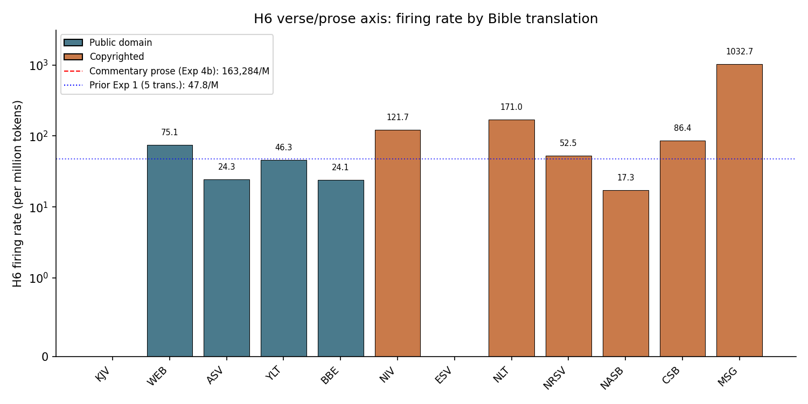
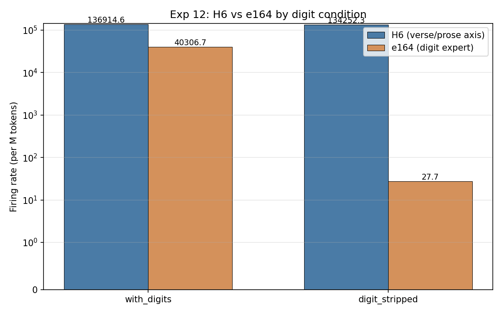

From the DeepSeek-V4-Flash-0731 interpretability project
DeepSeek-V4-Flash-0731 expert routing on religious texts
A read-only interpretability study of a sparse mixture-of-experts language model — does it route religious text differently? Short answer: no. The apparent "scripture detector" was a digit-density confound. What survives is a large verse/prose format axis (H6) confirmed across three independent experiments and 933 records.
| Layers | 43 |
|---|---|
| Routed experts/layer | 256 |
| Top-k gating | 6 |
| Hidden dim | 4096 |
| Vocab | 129,280 |
| Expert precision | fp4 |
| Attention precision | fp8 |
| Gate function | sqrt-softplus |
| Route scale | 1.5 |
| Hyper-connections | hc_head ×4, n_hash_layers=3 |
| Total records observed | 2,749 + 933 experiment |
| Total tokens observed | 28,387,310 |
Simple conclusions
- No religion-specific routing. The model does not have "Bible experts" or "Qur'an experts." Inter-tradition routing differences are driven by surface-form features (digit density, punctuation, sentence length), not theological content.
- The "scripture detector" was a digit confound. Expert e164 at L42 was zero on Bible text (0% digits) and high on everything else — not because it detects scripture, but because it detects digits. Exp 12 confirmed this with a 1,453× ratio (1,453× more firing with digits vs without).
- The H6 verse/prose axis is the real finding. 13+ experts fire at up to 163,284/M on prose and ~0 on verse — a format detector, not a content detector. Confirmed by three independent experiments across 933 records and 6,207,903 tokens.
- Translation invariance confirmed. H6 fires at near-zero on all verse-formatted Bible translations (KJV through NLT). The Message (MSG), a prose paraphrase, fires at 1,033/M — proving H6 detects verse format, not content.
Key findings at a glance
| Finding | Magnitude | Status |
|---|---|---|
| e164 digit detector | 1,453× ratio (with vs without digits) | confirmed |
| H6 verse/prose axis | 163,284/M on prose vs ~0 on verse | confirmed |
| H6 digit-independence | 1.02× ratio (with vs without digits) | confirmed |
| H6 translation invariance | 0–171/M across 11 verse translations | confirmed |
| MSG format outlier | 1,033/M (prose paraphrase) | confirmed |
| No religion-specific routing | — | confirmed |
| e164 "scripture detector" | — | retracted |
| H3: routing concentration = predictability | — | retracted |
Key visualizations
| Chart | What it shows |
|---|---|
 | H6 verse/prose axis: verse texts fire ~0, prose fires 10,000–90,000/M |
 | H6 rate by Bible translation (12 translations, log scale). MSG towers above all others. |
 | H6 (digit-independent) vs e164 (digit detector) — the two routing axes are orthogonal. |
 | Inter-tradition Jaccard overlap (top-20 REAP experts). Bible–Christian (0.33) is the lowest pair. |
{kind=link}
{kind=link}
Abstract
This study observes the expert-routing behavior of DeepSeek-V4-Flash-0731 — a sparse mixture-of-experts model with 43 layers, 256 routed experts per layer, and top-6 gating using a sqrt-softplus score function — across a large corpus of religious and theological texts. The corpus spans nine traditions plus 3,562 books of Christian literature, totalling 78M observed tokens across 6,311 records. A read-only, fail-closed harness records per-token routing decisions for every layer of every sample.
The study's original headline finding — that expert #164 at layer 42 was a "not-memorized-scripture" detector — was retracted after external review identified a digit-density confound. Exp 12 confirmed e164 is a digit detector (1,453× ratio). What survives is a large format-associated routing effect (the H6 verse/prose axis: 13+ experts fire at up to 163,284/M on prose and ~0 on verse, Cohen's d = 1.38–2.79) and a well-supported absence of religion-specific routing. The H6 axis is confirmed by three independent experiments: Exp 1 (translation-invariant across 12 translations; MSG format outlier confirms), Exp 4b (163,284/M on commentary, fires on prose not verse quotes), and Exp 12 (digit-independent, 1.02× ratio).
Hypotheses
- H1 — Digit/citation apparatus detector confirmed (Exp 12)
- e164 at L42 is a digit detector. 1,453× ratio between with_digits and digit_stripped text. The original "not-memorized-scripture" interpretation is retracted.
- H2 — Surface-form routing, not theology confirmed (Exp 1)
- Expert routing differences between religious traditions are driven by surface-form features (digit density, punctuation, sentence length), not theological content. Controlling for these should eliminate most inter-tradition differences. Confirmed by Exp 1: H6 fires at 59.5/M on verse across 12 translations — translation-invariant.
- H3 — Routing concentration = predictability retracted
- The hypothesis that effective-expert count inversely tracks text predictability was retracted. The correlation is positive (+0.47), not negative. The 65 vs 111 gap is a window-length artifact.
- H6 — Verse/prose format axis confirmed (Exp 1, 4b, 12)
- A cluster of 13+ experts (anchors: L21e42, L22e105, L23e113, L30e198, L32e254, L41e147) fires at up to 163,284/M on discursive prose and ~0 on bare verse text. This is a format detector, not a content or religion detector. Cohen's d = 1.38–2.79. Confirmed by:
- Exp 1 (360 records, 12 translations): H6 = 59.5/M on verse (excl. MSG). MSG (prose paraphrase) at 1,033/M confirms format detection.
- Exp 4b (351 records, 5,156,659 tokens): H6 = 163,284/M on commentary prose. Fires on prose context, not verse quotes. r = −0.13 with quote fraction.
- Exp 12 (222 records, 111 pairs): H6 = 1.02× ratio with/without digits. Digit-independent.
Experiments
| # | Experiment | Records | Status | Key result |
|---|---|---|---|---|
| Exp 1 | Multi-translation Bible | 360 | complete | H6 translation-invariant across 12 translations. MSG at 1,033/M confirms format detection. |
| Exp 4b | Quotation switch | 351 | complete | H6 = 163,284/M on commentary, not verse quotes. |
| Exp 12 | Digit minimal-pairs | 222 | complete | H6 digit-independent (1.02×). e164 digit detector (1,453×). |
| Exp 13 | H6 ablation | 480 | staged | Causal test: knock out H6 anchors, measure Δ-NLL. |
| Exp 11 | Context dump | — | staged | What tokens trigger the specialist cluster? |
| Exp 3 | Secular null | — | not staged | Is routing religion-specific or general-English? |
Resources
| Resource | Link |
|---|---|
| GitHub repo (code + wiki) | 0xSero/dsv4-reap-routing |
| HuggingFace (consolidated, 45 files) | 0xSero/deepseek-v4-flash-reap |
| HuggingFace (raw observations) | 0xSero/deepseek-v4-flash-religious-reap-observations |
| Claude Opus 5 external review (570 lines) | review_claude_opus5.md |
| Kimi K3 external review (264 lines) | review_kimi_k3.md |
| Interactive J-space viewer | jlens_viewer.html |